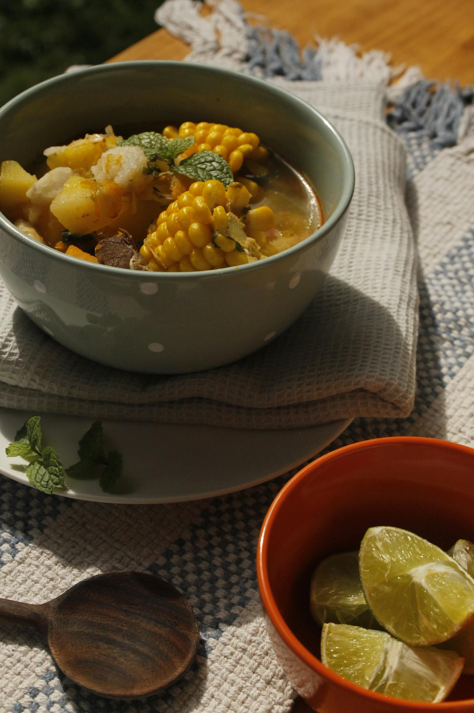

Ajiaco Santafereño Casero

El ajiaco santafereño es uno de los platos más representativos de Bogotá, la capital de Colombia. Esta deliciosa preparación se puede disfrutar en cualquier momento del día: desayuno, almuerzo o cena. Sin embargo, mi recomendación personal es para el desayuno o el almuerzo... ¡aunque no me negaría a ambas!
¿Qué ingredientes necesitamos para preparar un delicioso ajiaco santafereño casero?
Para un ajiaco bogotano bien tradicional (para 4-6 personas), estos son los ingredientes principales:
- 1 pechuga de pollo grande (con hueso y piel para más sabor, aprox. 800 g a 1 kg).
- 3 tipos de papas (¡esto es clave!)
- 700-800 g de papa criolla (la que se deshace y espesa el caldo).
- 700-800 g de papa pastusa (en rodajas gruesas).
- 700-800 g de papa sabanera o roja (también en rodajas).
- 2-3 mazorcas de maíz tierno, cortadas en trozos.
- 1 manojo de guascas frescas (o ½-1 taza secas) ¡el ingrediente que le da el sabor único!
- 2-3 cebollas largas (o junca), picadas.
- 2-4 dientes de ajo (de acuerdo a tu preferencia).
- 1 ramita de cilantro fresco (opcional).
- Sal y pimienta al gusto
- Agua 2.5 a 3 litros para el caldo
Los utensilios de cocina que necesitamos. ¡Porque sin ellos no hay ajiaco!
Para hacer un ajiaco casero auténtico, estos son los básicos (nada muy fancy, lo que casi todo el mundo tiene en casa en Bogotá):
- Olla grande (de al menos 5-6 litros, preferiblemente de acero o aluminio grueso) – para cocinar el caldo y todo junto.
Dato curioso: Si sabes usar una olla a presión, puedes ahorrar más tiempo que con una olla común (¡el pollo y las papas se cocinan mucho más rápido!).
- Cuchillo afilado para pelar y cortar las papas, mazorcas y pollo.
- Tabla de picar para verduras, papas y pollo.
- Cuchara de palo o cucharón grande ideal para revolver sin rayar la olla y servir
- Casuela de barro (la tradicional colombiana, con su canastilla de mimbre o totumo) para servir individualmente y mantener el calor (¡es lo más bogotano!).
- Tenedor y plato para desmenuzar el pollo facilmente
Con esto ya puedes empezar sin problemas. Si no tienes cazuela de barro, cualquier plato hondo sirve, pero la de barro le da ese toque especial.
Preparación paso a paso (toque casero de abuela)
Esta es la receta más tradicional, con el toque de la abuela: sin prisas, a fuego lento y con mucho amor. Tiempo aproximado: 1.5 a 2 horas.
-
Prepara el caldo base con el pollo
En una olla grande pon 2.5-3 litros de agua fría. Agrega la pechuga de pollo entera (con hueso y piel), 2-3 cebollas largas picadas, 2-4 dientes de ajo machacados, una ramita de cilantro, sal y pimienta. Cocina a fuego medio-bajo tapado por 30-45 minutos hasta que el pollo esté tierno. Saca el pollo, desmenúzalo y reserva el caldo.
-
Agrega las mazorcas y las papas duras
Vuelve el caldo a la olla y pon las mazorcas de maíz cortadas en trozos. Agrega la papa pastusa y la papa sabanera (peladas y en rodajas gruesas). Cocina 20-30 minutos hasta que empiecen a ablandarse.
-
Incorpora la papa criolla y las guascas
Añade la papa criolla y el manojo de guascas (amarrado con hilo para quitarlo fácil después). Cocina 15-25 minutos más a fuego bajo. La papa criolla se deshace sola y espesa el caldo – ¡no uses licuadora!
-
Rectifica y termina
Prueba y ajusta la sal. Vuelve a poner el pollo desmenuzado y cocina 5-10 minutos más. Apaga el fuego y deja reposar tapado 5-10 minutos para que los sabores se integren.
-
Sirve con amor
En cazuela de barro o bowl hondo: pon el ajiaco caliente. Cada quien agrega arroz blanco, aguacate en rodajas, alcaparras y crema de leche al gusto. ¡A disfrutar!
Dato de abuela: Si lo cocinas un día antes, al día siguiente sabe aún mejor porque los sabores se asientan. ¡Paciencia es la clave!
Ahora tienes la auténtica receta de un ajiaco santafereño, pero aún puedes ver más recetas colombianas caseras en nuestro menú principal.